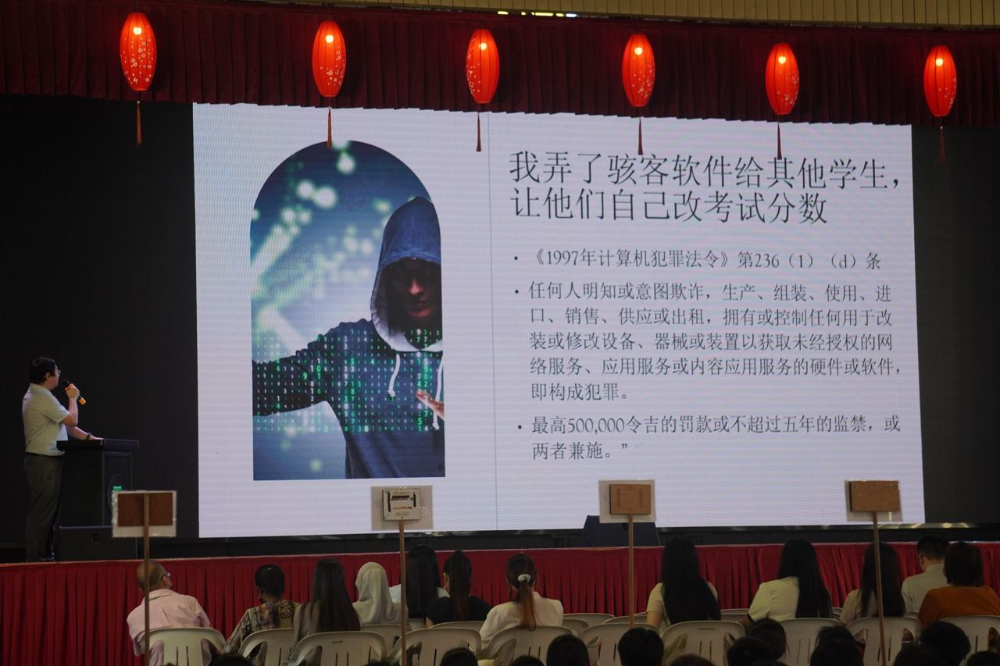
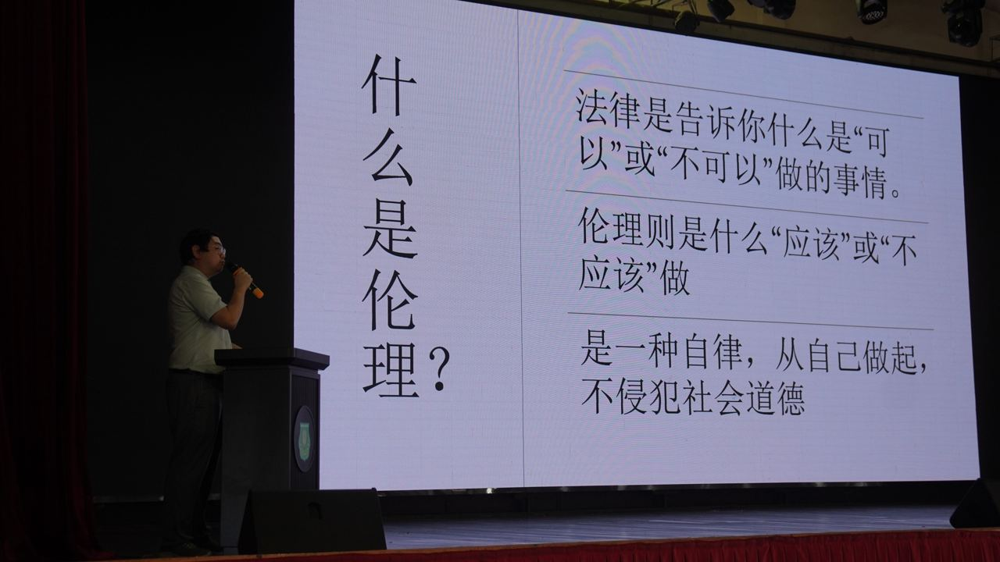
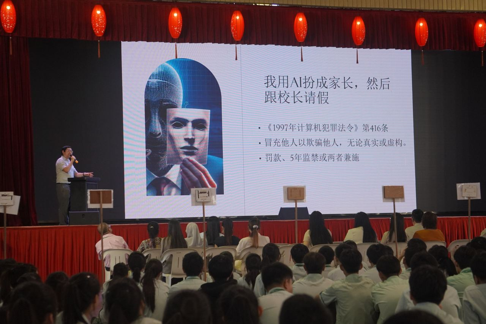
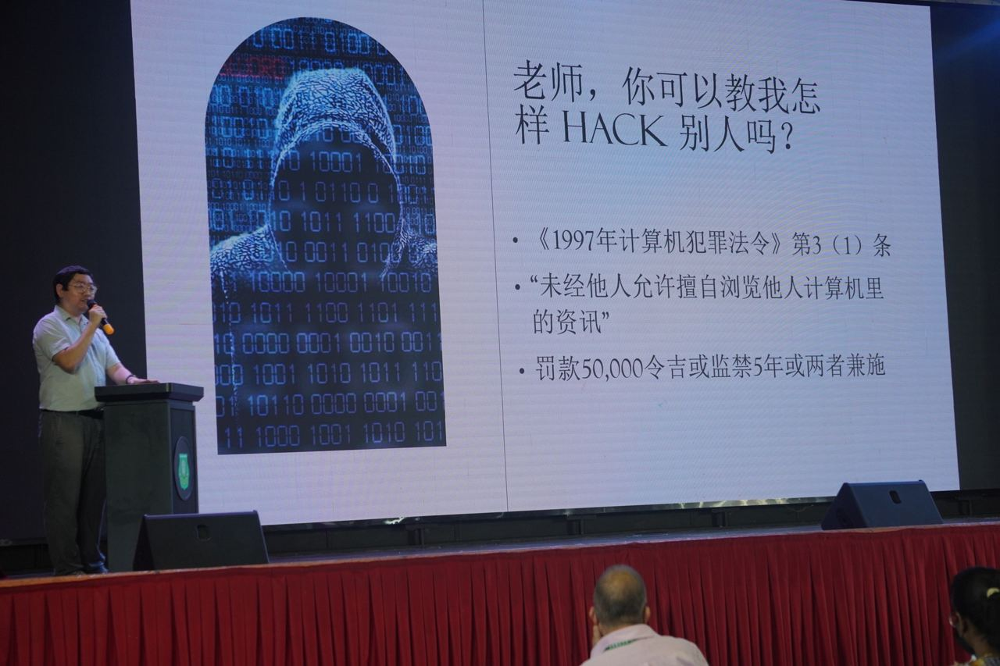
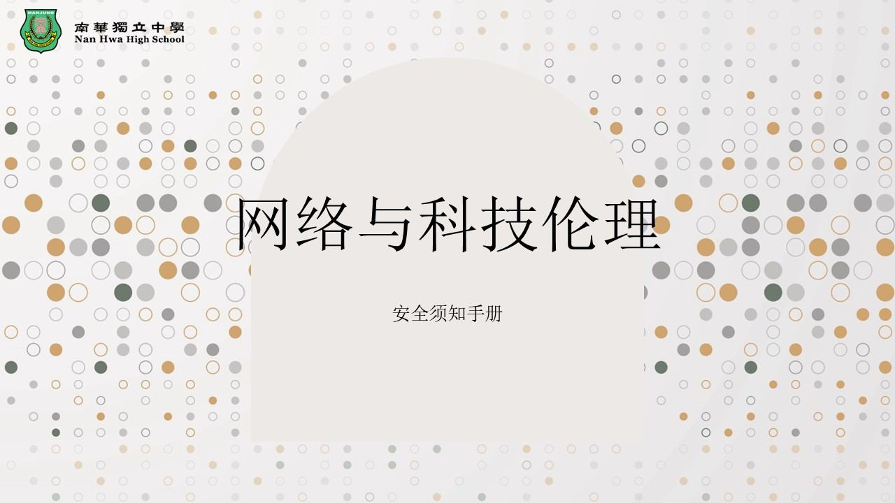
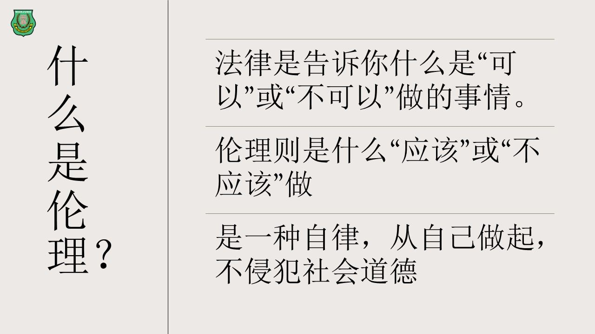
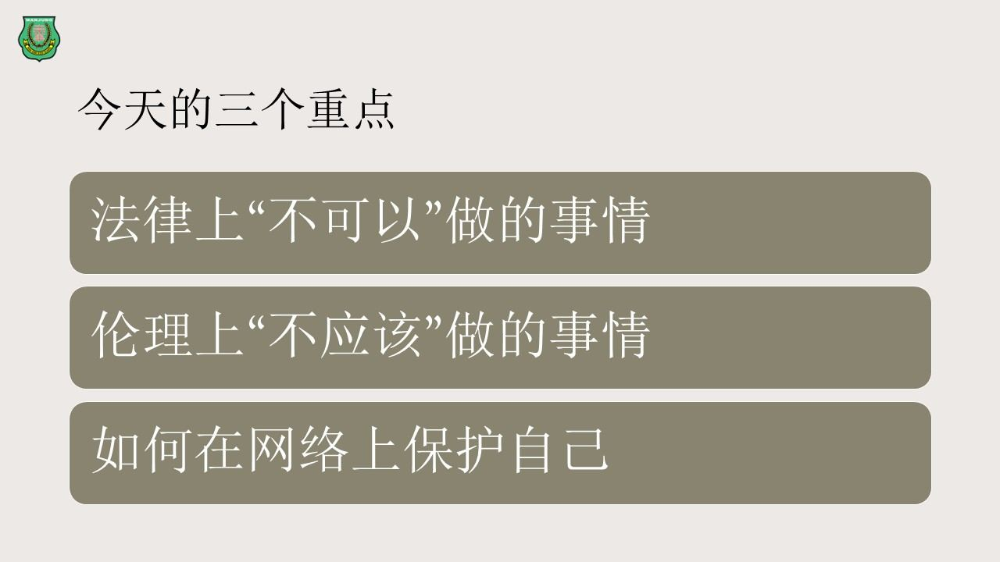

“网络与科技伦理”讲座
“网络与科技伦理”讲座
提升南华独中师生网络素养
因应网络与科技日益渗透日常生活，曼绒南华独中于今日特此举办“网络与科技伦理”讲座，由电脑科技处主任黄冠铭老师主讲，旨在全面提升全校师生的网络素养与科技责任意识。
本次讲座特别从法律、伦理及自我保护三大维度出发，引导学生认知网络世界的潜在风险，强化他们的判断力与责任感。内容涵盖滥用深伪技术（Deepfake）、网络霸凌、骇客行为及个人资料保护等课题，提醒学生在享受科技便利的同时，更应谨慎使用，防范违法与不当行为。
讲座中强调：“法律告诉我们什么不能做，伦理提醒我们什么不该做。”除了列举各种法律责任，讲师也引用了“电脑道德十诫”与网络文明行为准则，呼吁学生“己所不欲，勿施于人”，时刻铭记屏幕另一端也是一个真实的人。
本校校长陈丽冰博士亦在致辞中表示：“‘上善若水任方圆’，面对变化万千的网络世界，我们必须学会正确地处世接物，既要保持警惕，也不应以身犯险。”她勉励全体师生在使用网络时，始终坚守道德底线，秉持尊重与同理之心，做个负责任的网络公民。
讲座结束前，主讲人也提醒大家，一旦遇到网络危机，应立即告知家长并向有关单位如MCMC或NACSA报案，及时止损。
本校向来对科技时代教育责任的高度重视，尤其在品格教育与数码素养方面给予学生最新资讯之余，亦注重道德底蕴的培养与灌输。






